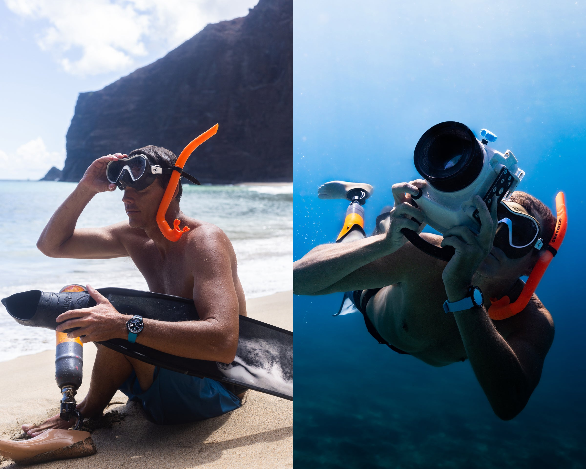

Roots
Born and raised on Kauaʻi.
I live in Kīlauea. My stake in this island is generational, not seasonal — and my priority for the next two years is keeping local families here.
Affordable housing for the families who keep this island running. Infrastructure that doesn’t pass the buck. Quality of life for everyone who calls Kauaʻi home. I’m Mike Coots — running for County Council with fresh ideas, real urgency, and one priority: the people of Kauaʻi.

Meet Mike
I’m a small-business owner from Kīlauea running for Kauaʻi County Council. Born and raised here, I’m not a politician — my only special interest is the people of this island. For twenty years I’ve built coalitions and moved laws through rooms that didn’t want to pass them. I’m bringing that work home with fresh ideas and the urgency this moment demands.
Read my full storyThe platform
A County Council seat is not a social-media account. It is a line on a vote and a position in a room. Here is what I will vote for, push for, and build coalitions around — in plain language, with the mechanisms that actually move the needle.
The lack of affordable housing is by far the biggest and most urgent issue on Kauaʻi. The ability to rent or purchase a first home has become out of reach for too many of our residents. Families from here are leaving for the mainland. Communities are losing their character. The Kauaʻi I grew up in is changing at an accelerating rate — and we need to act with urgency. My primary mission is to keep local families here, and to make it possible for those who’ve already left to come home.
What I’ll push for on day one.
The Kekaha landfill is nearing capacity. Our water system — on one of the most water-rich places on Earth — struggles to keep up with the housing we need. Too often, county and state simply scapegoat each other. Infrastructure is unglamorous. It is also the thing that either lets families live here or doesn’t.
Tourism that serves the island. Houselessness met with structure and dignity. Local care for our youth. Beach parks that match the beaches. Food we can grow and afford. Wild places that stay wild.
Affordable housing is the priority for the next two years. The rest is the work of improving quality of life on Kauaʻi for everyone who calls it home. I humbly ask for one of your seven votes.
Kauaʻi is worth fighting for. Our families are worth fighting for. I’m running to make sure the people here can afford to stay here — and thrive here.
Mike Coots
About Mike
Mike Coots was born and raised on Kauaʻi and lives in Kīlauea. He owns and operates a small photography business that works with local hotels, small businesses, and the visitor bureau. He is a neighbor before he is anything else.
In 1997, at eighteen, a tiger shark attacked him bodyboarding off the westside and he lost his right leg. Most people know that part. What came after is the part that prepared him for this work.
A decade later, he picked up a camera — and then a cause. He helped pass Hawaiʻi’s first-in-the-nation ban on the shark-fin trade in 2010. He lobbied Congress for the federal Shark Conservation Act, which President Obama signed into law in 2011. He has testified at the United Nations and before committees in Washington. His 2023 book Shark: Portraits (Rizzoli) is eight years of that work.
The point is not the sharks. The point is the pattern: show up prepared, build a coalition across political lines, write the bill in plain language, and keep showing up until the vote happens. That is the skill set this Council needs on housing. It is what Mike is bringing to the job.
He is not a politician. His only special interest is the people of Kauaʻi. A fast learner, fair, and approachable — he believes the issues facing this island can be solved with creative, bold, and straight-forward solutions.
What I bring
I’m running with fresh ideas and the urgency this moment demands — and with the experience to turn those ideas into law from day one.
I live in Kīlauea. My stake in this island is generational, not seasonal — and my priority for the next two years is keeping local families here.
Helped pass Hawaiʻi’s first-in-the-nation shark-fin ban (2010) and the federal Shark Conservation Act signed by President Obama (2011). I know how to build a coalition and bring a bill across the line.
I run a photography business that works with local hotels, small businesses, and the visitor bureau. I know what running a small operation on this island actually costs.
No PAC, no out-of-state consultancy, no political career to protect. Fast learner, fair, and approachable — with one job: the people of Kauaʻi.
Why 2026
For the first time since 2002, Kauaʻi County Council has four open seats in a single cycle. The mayor’s office is changing hands. The laws we pass on housing, infrastructure, and quality of life will shape this island long past our time on the Council.
We can’t keep doing business as usual. Fresh ideas and energy are long overdue. I’m running because I’ve spent a career taking on hard fights and winning them — not for an ideology, but for a place. Now the place is home.
Endorsements
Endorsements will be added as the campaign rolls out. Want to endorse? Let us know.
“A candidate who understands that housing is the floor everything else stands on. Mike gets it.”
“Kauaʻi needs council members who listen first and build consensus. Mike does both.”
“I’ve watched him move hard legislation for twenty years. He does the work.”
Get involved
There is no out-of-state consultancy, no corporate PAC. Just people on this island who want it to keep being this island. Sign up to volunteer, host a sign, walk your neighborhood, or chip in what you can.